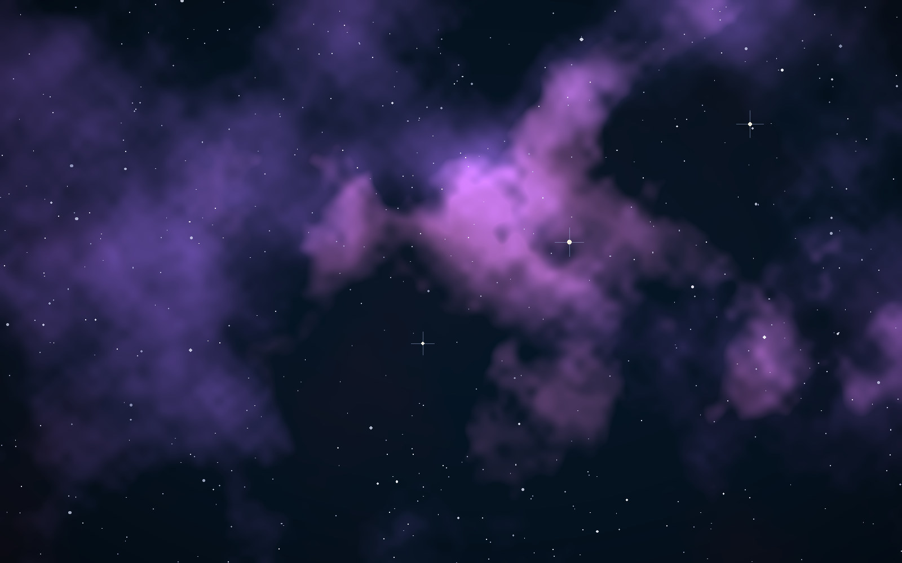

01 / ASTRONOMY
What has
the sky hidden?
Characterising a main-belt asteroid. Looking through astronomical surveys for phenomena that routine searches may have missed.
Explore the asteroid study ↗A personal atlas of questions.
Mathematics, astronomy, and the space between an observation and an explanation.
MATHEMATICS / ASTRONOMY / RESEARCH
Researching the patterns we can prove, and the things we have yet to notice.

The sky is
not finished.
Some questions demand a telescope. Others demand a proof. Both reward looking twice.
FOUR WAYS OF LOOKING
Finding the signal that a routine search passes over.
01 / ASTRONOMY
Characterising a main-belt asteroid. Looking through astronomical surveys for phenomena that routine searches may have missed.
Explore the asteroid study ↗02 / MATHEMATICS
Integer sequences, generating functions, recurrences and the demanding boundary between evidence and proof.
An OEIS reference ↗03 / PEOPLE
Science communication and interdisciplinary work through the NoRCEL Institute, bringing more people into serious inquiry.
The NoRCEL Institute ↗A selection of public papers and manuscripts. Preprints are identified separately from journal publications; titles reflect the authors’ claims, not independent verification.
I’m Deepnil Ray. My work moves between mathematics, astronomical observation, and questions that do not fit comfortably into a single discipline.
I study at Ashoka University and work on science outreach through the NoRCEL Institute. This website is an index of ongoing work, not a finished account.
Read the research profile ↗For research conversations, collaborations and interesting problems.